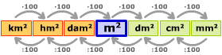

INTRODUCCIÓN
Para medir el area o la superficie, la unidad es el metro cuadrado. Un metro cuadrado es un cuadrado de un metro de lado. Su símbolo es m2. Para medir superficies de terreno se utiliza el area, la centiarea (submúltiplo del area) y la hectárea (múltiplo del area)..

OBJETIVOS
- 1.- Conocer las unidades de área y superficie.
- 2.- Comprender por qué las unidades de área cambian de 100 en 100.
- 3.- Realizar ejercicios de conversión entre múltiplos y submúltiplos de la unidad de área o superficie.
INSTRUCCIONES
En la primera escena podrás ver cómo obtener el primer submúltiplo del metro cuadrado y verás que las unidades de área cambian de 100 en 100. Simplemente haga clic en el botón avanzar o el botón retroceder que aparece a medida que avanza.
La segunda escena muestra la "escala" de las unidades de superficie y la equivalencia con la hectárea, el area y la centiarea utilizados para medir las superficies de los terrenos. Puede ver la variación entre dos unidades en dos niveles consecutivos haciendo clic en el botón avanzar 0 el botón retroceder.
La tercera escena ofrece ejercicios de conversión entre las diferentes unidades de área. Solo presenta la respuesta correcta y haga clic en el botón "Comprobar" para corregir. Si tenemos al menos siete respuestas correctas de 10 (70% o más), consideramos que estamos progresando bien. De lo contrario, habrá que repasar con las dos primeras escenas